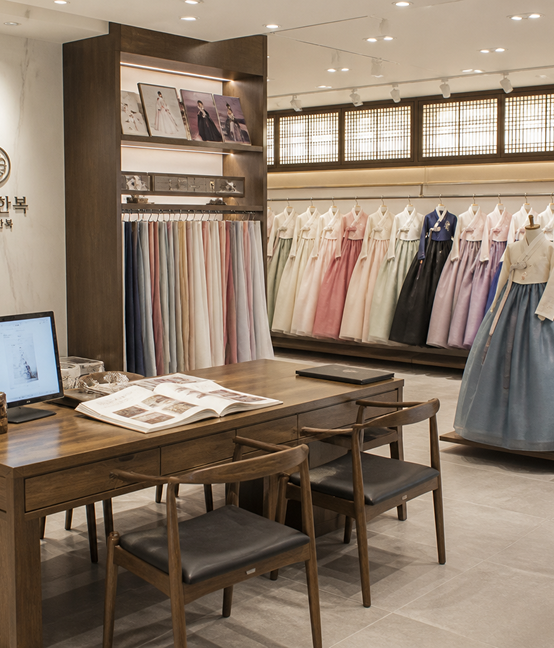
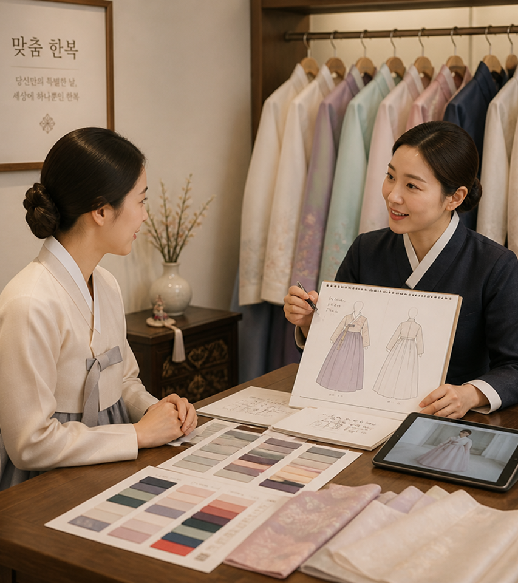
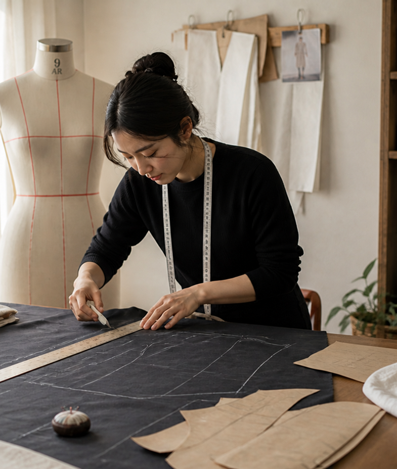
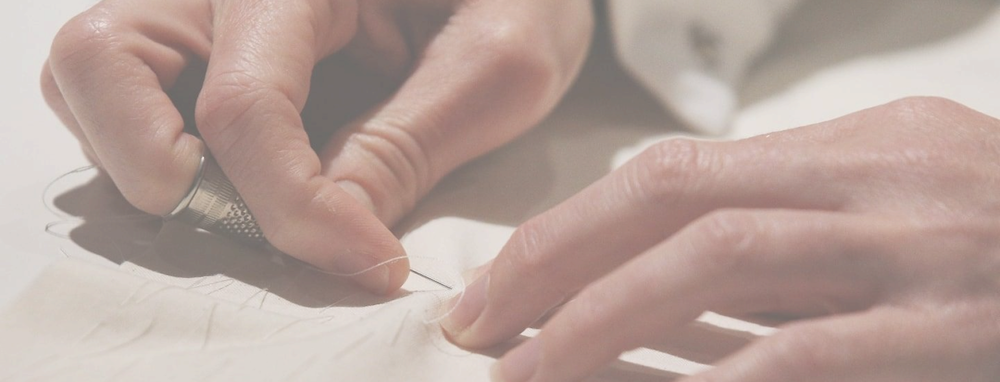
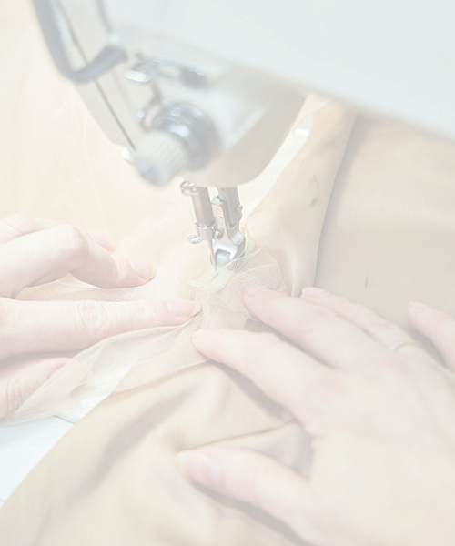
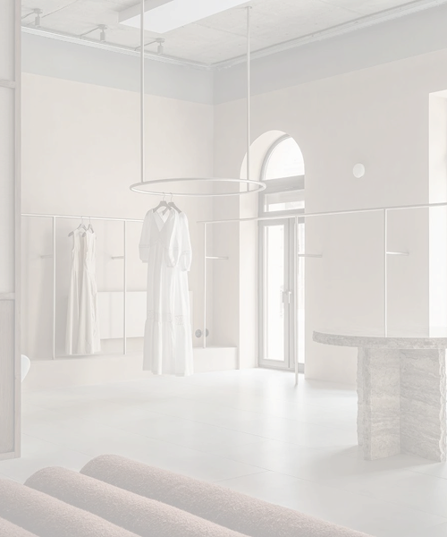

Bespoke — Tchaikim Yeongjin
Your story,
made into a single
garment.
Bespoke at Tchaikim Yeongjin follows
no standard size, no standard taste.
From first consultation to final fitting,
one piece takes shape across five meetings.

There is no standard size.
Only your measurements,
and your taste.
Ready-to-wear is an average made for many.
Bespoke is the one right answer, made for one person.
From the moment a fabric is chosen to the final stitch,
our artisans think of nothing else..

The Atelier
A workshop built around one habit: looking closely.
Every garment passes through the same hands,
from pattern to final press.
Our tailors work in small batches,
by appointment only.
“We don’t design for a body. We design for this body, this fabric, this occasion.”
— Head designer, Tchaikim Yeongjin





Step 01 / 05
Consultation
We begin with a conversation — your taste, your proportions, and the occasion the piece is meant for. Nothing is measured yet. What we settle here is what the garment needs to be before a single line is drawn.
Step 02 / 05
Design selection
Silhouette, collar line, sleeve and hem are decided together against sketches and pieces from the archive. What leaves this meeting is a pattern drafted for your body alone, kept on file for anything we make for you afterwards.
Step 03 / 05
Fabric & measurement
Six signature fabrics are laid out in daylight so you can choose by touch as much as by colour. Once the cloth is set, we take the full set of measurements and record them against your pattern.
Step 04 / 05
Tailoring
Cutting begins in the atelier and the piece is built up by hand over the following weeks. Seams, lining and finishing are worked in small batches, so one pair of hands stays with your garment from first stitch to last.
Step 05 / 05
Completion
A final fitting checks the fall of the skirt and the set of the shoulder, and any last adjustment is made on the spot. The piece is then pressed, wrapped, and handed over as entirely yours.
Six fabrics to begin with

Each piece begins with a single bolt of cloth. These six are the fabrics we keep on hand through the year, chosen for how they hold a line, catch the light, and settle against the body.
Refined — Elegant — Timeless
A luxurious fabric with a soft texture and graceful drape. Woven from continuous filament, it catches light along every fold and settles close to the body — which is why it carries the deep, even colour a formal jeogori asks for.
Honest — Breathable — Everyday
A plain-woven cloth that softens with every wearing. It holds a crisp line at the collar and cuff while staying cool against the skin, which makes it the fabric we reach for when a piece is meant to be worn often rather than kept.
Cool — Structured — Unhurried
Spun from flax, linen keeps an architecture of its own. The weave stands slightly away from the body so air moves through it, and the creases it gathers through a day belong to the material rather than counting as a flaw.
Crisp — Translucent — Summer
A ramie cloth woven finely enough that light passes through it. Cool and almost weightless, mosi has dressed Korean summers for centuries; it keeps a sharp, sculptural silhouette in still air and grows more supple with every wash.
Limited — Textural — Of the moment
A short run of cloth chosen for one season only. Weight, weave and colour shift with what the mills release that year, so these bolts are offered while they last and each one gives the same pattern a different hand and fall.
Heritage — Lustrous — Handwoven
Myungjoo silk woven in Sangju, where the craft has been kept for generations. Reeled from domestic cocoons on narrow looms, it carries a quiet, uneven lustre that mill-made satin cannot reproduce, and it deepens rather than fades with age.

Book your first meeting.
Consultations take place at our Seoul atelier or by video call.
Request a reservationA few things worth knowing
Before creating your bespoke hanbok, explore the materials, timeline, and investment.
-
01
Material
Fabric Guide
Six signature fabrics, drawn from a wider range of premium materials.
-

02
Timeline
Production Time
From consultation to completion, expect an average of 6 to 8 weeks.
-

03
Contact
Description
Guide to booking & direct link to the booking page
Contact →